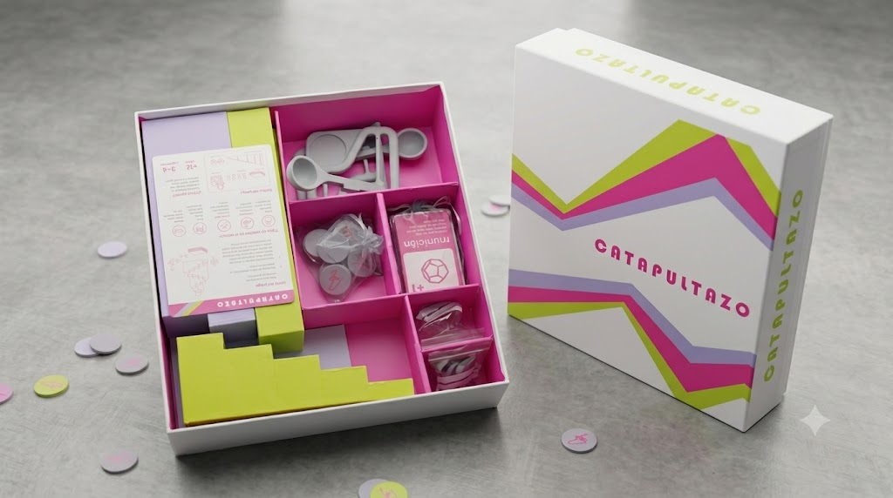

AQUÍ LAS DECISIONES NO SOLO SE PIENSAN, SE LANZAN.
Catapultazo es un juego de mesa interactivo donde los jugadores deberán enfrentarse mediante lanzamientos estratégicos, precisión y control del espacio de juego.
¿QUÉ ES
CATAPULTAZO?
Catapultazo es un juego de mesa para 3 o 4 jugadores, de más de 12 años de edad, donde se busca competividad entre jugadores, así trayendo un flujo intenso y una clara inmersión a cada momento. Inspirado en la interacción física de los juegos de mesa contemporáneos y en las experiencias lúdicas colaborativas, Catapultazo propone una experiencia donde el movimiento, el cálculo y la sorpresa conviven en una misma mecánica. Cada turno es una oportunidad para atacar, defender o alterar completamente el equilibrio del juego.

CONCEPTOS CLAVES
Pilares que definen Catapultazo: precisión, estrategia y control del impacto.
PRECISIÓN
Control del lanzamiento y cálculo del impacto.
La precisión representa la capacidad del jugador para controlar la fuerza, dirección y trayectoria de cada lanzamiento. Un movimiento exacto puede cambiar completamente el resultado de la partida.
ESTRATEGIA
Decisiones que cambian el rumbo de la partida.
Cada turno obliga a analizar riesgos y oportunidades. Elegir cuándo atacar, defender o modificar el tablero es tan importante como el propio lanzamiento.
IMPACTO
Física, rebotes y control del espacio de juego.
El impacto determina cómo interactúan las piezas con el tablero. Rebotes, desplazamientos y colisiones generan nuevas situaciones estratégicas en cada ronda.
NO TODO IMPACTO
OCURRE POR
ACCIDENTE
Cada lanzamiento nace de una decisión estratégica dentro del juego.
Las acciones de los jugadores modifican el tablero y generan situaciones inesperadas.
Cada lanzamiento nace de una decisión estratégica. Los jugadores modifican el tablero y cambian el rumbo de la partida.

La combinación entre habilidad, observación y precisión genera situaciones únicas.
PiX
PiX representa la experiencia interactiva del juego. Aquí podrás visualizar demostraciones, secuencias de juego y ejemplos de interacción entre jugadores.
PÁGINA EXPERIMENTAL
Este espacio explora una versión alternativa del juego, donde se levanta una experiencia interactiva.
Experimenta